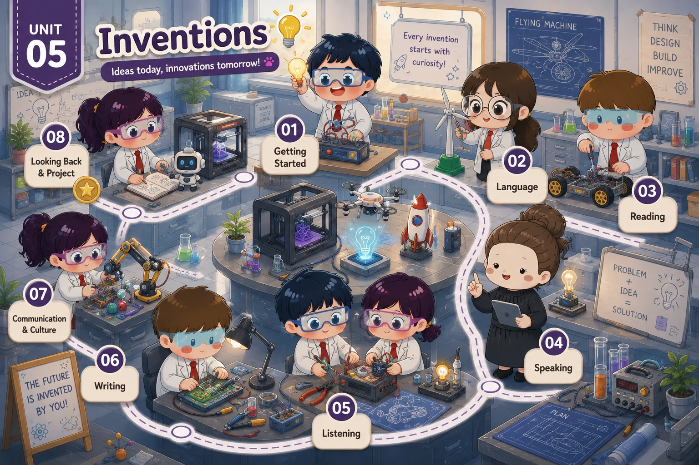

Lesson 1 · Getting started — Inventions for education Lesson 2 · Language Lesson 3 · Reading: Artificial Intelligence Lesson 4 · Speaking: Uses of an invention — chưa có bài giảng Lesson 5 · Listening: A smart robot vacuum cleaner — chưa có bài giảng Lesson 6 · Writing: Benefits of an invention — chưa có bài giảng Lesson 7 · Communication and Culture / CLIL — chưa có bài giảng Lesson 8 · Looking back and Project — chưa có bài giảngĐã dựng: Lesson 1, 2, 3. 5 thẻ còn lại đang khoá (chưa có bài PPT hoàn chỉnh cho Lesson 4–8).